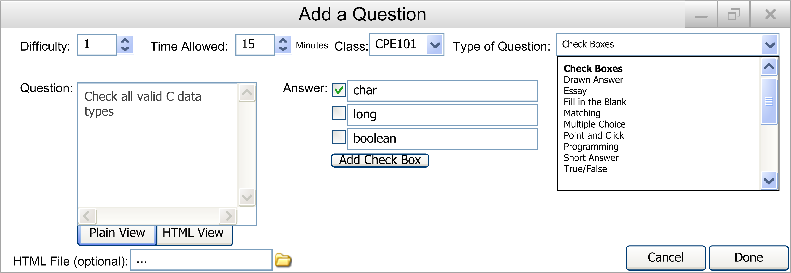

This section will include all of the small changes to Functional Requirements sections that we did not have time to change in every single screenshot.
Section 2.2.2:
- In the Add Question screenshots, there should be a drop down box for what class the question is for. This box fits in between the Time Allowed and Type of Question selection areas. Figure 2.2.2.1 (not filled in) and Figure 2.2.2.1.2 (filled in) show this box as it should be. For all of the other Add Question screenshots, assume that when implemented, the Test Tool will have that class box in every Add Question window. Additionally, the description of how the user will use this box is described in both Section 2.2.2 and Section 2.2.2.1. This also should apply to all of the other Add Question pages. The Figures and the description will be shown below.

Figure 2.2.2.1: not filled in Add Question as it should be

Figure 2.2.2.1.2: filled in Add Question as it should be
Description: Class: The class this question is designed for. Previously entered classes can be selected from the drop down box. To add a new class, the user simply types in the class name into the field. When the user selects Done after all of the other fields are filled out, the class will be added to the drop down box for selection in future question adds.